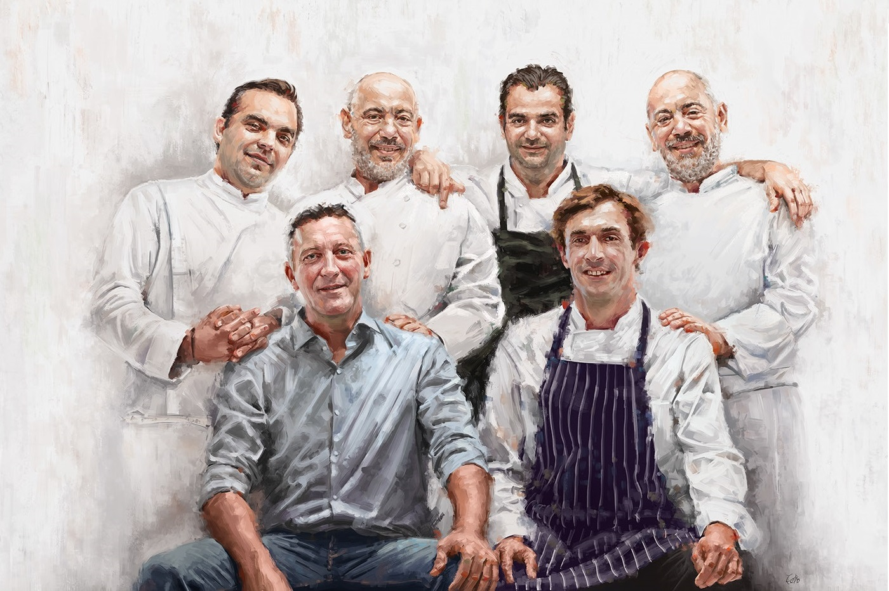
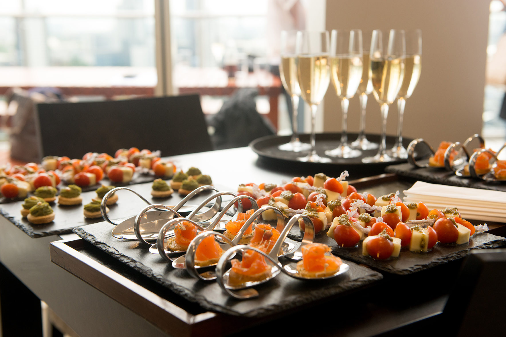

Sobre nosotros
Desde 1985, brindamos un servicio de excelencia y profesionalismo. A lo largo de nuestra historia, hemos adquirido
una vasta experiencia que nos permite brindar una atención seria y personalizada. Somos una empresa familiar donde el
esfuerzo, la confianza y el respeto son los valores principales de nuestro equipo de profesionales.
Cómo trabajamos
Ofrecemos un servicio integral que se adapta a las necesidades del cliente. Buscamos satisfacer las expectativas y
sobrepasarlas, a través de una metodología laboral seria y profesional. Nuestros estandares de trabajo se basan en
el compromiso, el respeto y la excelencia, así también como en la amabilidad y el esfuerzo.

Catering
Contamos con una amplia variedad de menúes gastronómicos, con la posibilidad de personalizarlos a gusto y medida.
Nuestro concepto se basa fundamentalmente en adaptar nuestro servicio en función de las necesidades de nuestro
cliente. Por este motivo, nos guiamos por lo que se quiere transmitir a los invitados.